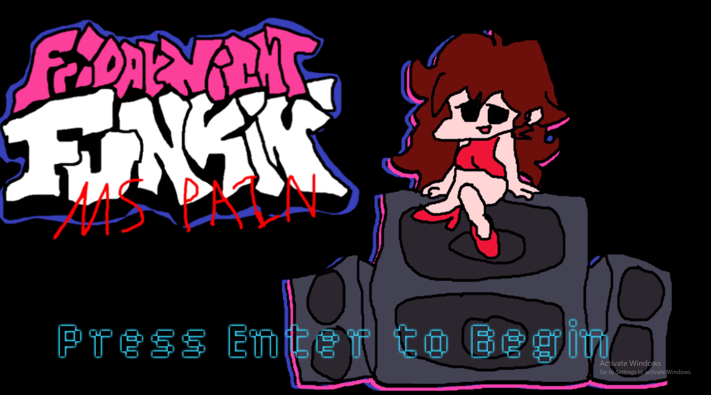
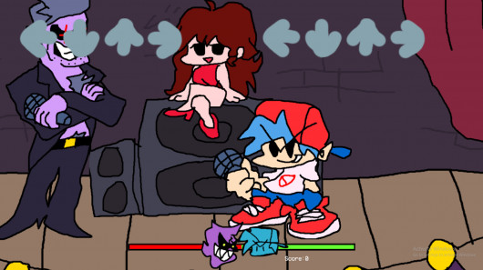
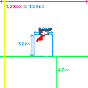
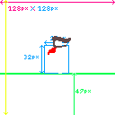

This is a list of projects I have worked on.
|
MS Pain This is a mod for the rhythm game Friday Night Funkin. Made to learn graphics and texture mapping. Replaces in-game graphics with pictures drawn in MS Paint, as the name suggests. Link to Gamebanana Page |
  |
|
|
YOMIH Slayer Mod This is a WIP mod for the game YOMI Hustle, which will add the character Slayer from the Guilty Gear franchise. This is a passion project exploring game development and modding. Currently on hold during the school year. |
  |
Placeholder until mod is in a video-able state. |
Currently, my top priority project would be finishing Slayer. I also want to get into a co-op, and depending on where I could add work from there onto this page.
-
Slayer Mod for YOMI Hustle. Todo:
- Finish Move List
- Finish Spritework
- Bugfixing
- Future endeavours.